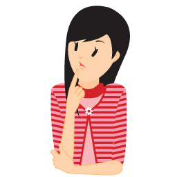
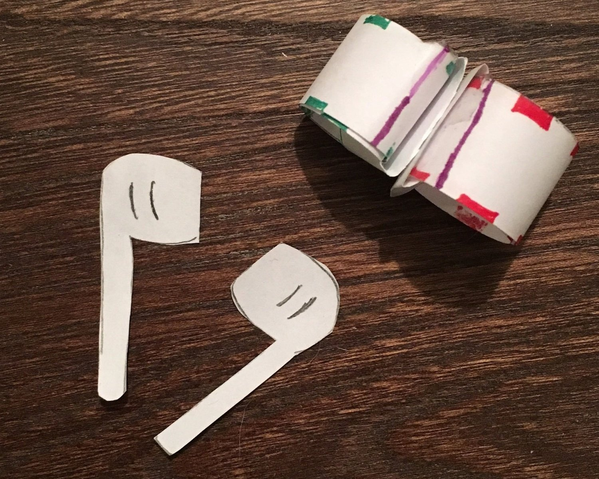
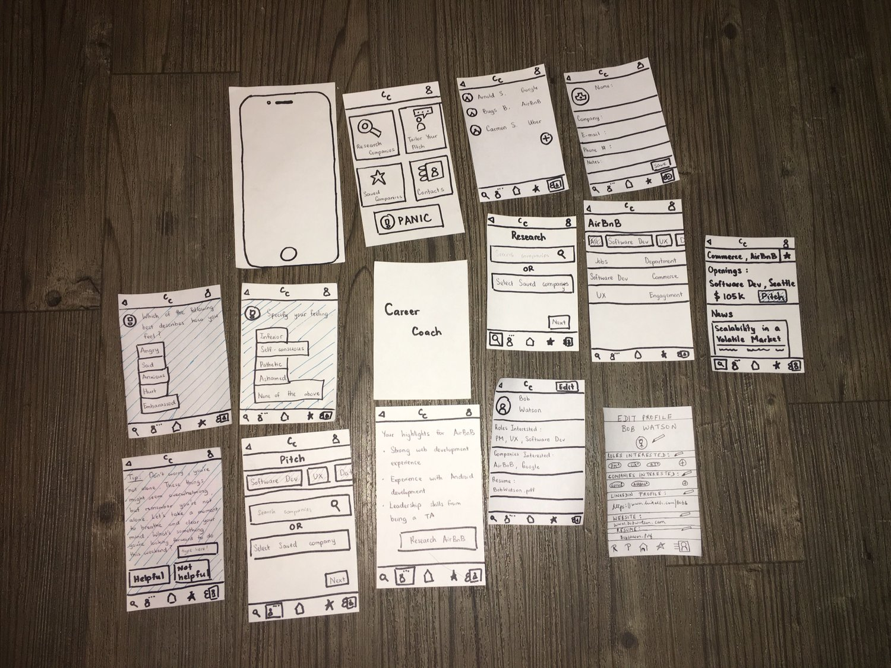
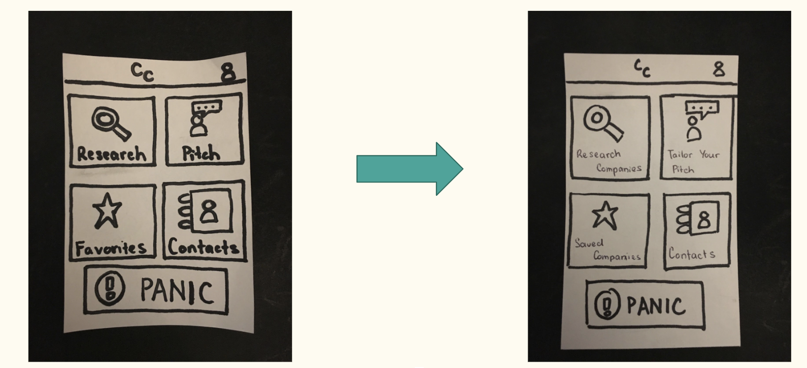
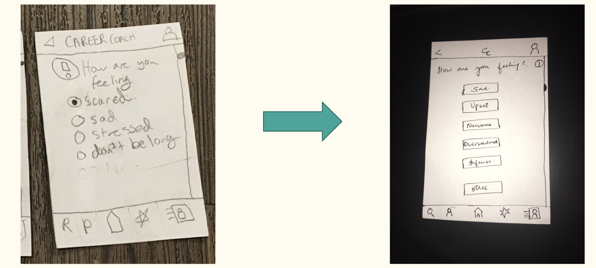
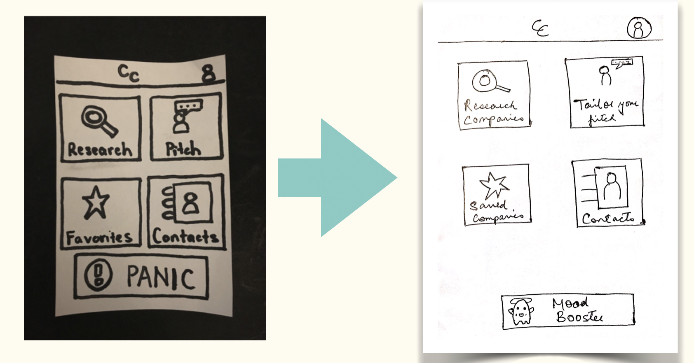

Career Coach
Career Coach is a mobile application that enables introverts to ace conversations at career fairs and network better.
Skills Developed: UX Design, UX Research, Storyboarding, Usability Testing, Heuristic Evaluation.
Team size: 4
My Role: Product Management, UX Design.
Tools used: Sketch, Figma, Invision.
Overview
The Problem
Career fairs are particularly difficult for introverts. They find it to be stressful and overwhelming. As a result, they are not able to showcase their best self to the recruiters. How to make networking via career fairs introvert friendly?
UX Research
We used two design methods to know about our users:
1) Interviews: Interviewed ten people, who identify as introverts about their experiences attending career fairs.
2) Fly on the wall technique: Observing how people behave and interact at career fairs. Below are the findings from our interviews:
- Introverts find career fairs to be particularly stressful and overwhelming.
- They don’t know what to talk to the recruiter in order to stand out from the crowd.
- They use their smartphones to research about companies, while waiting in the long queues that lead to the company representatives.
- They want to get the contact information of recruiters to follow up.
Design Themes

User Persona
We used personas to define who our product users are. Personas helped us to design a product that caters to the needs of the users and to understand who our primary stakeholders are.
The Design Process
Based on our research findings, we came up with the following tasks to match the user needs.
• Manage their emotions of anxiety and stress.
• What to talk to the recruiter to make a good first impression.

• Follow up with the recruiter.
• Finding a mentor.
Design Solutions and Challenges
We came up with different design solutions. Below are some of the challenges we came across with these designs.
Earbud AI
- How does the earbud know if the user is talking to the earbud or another human at the career fair?
- Will the user feel comfortable talking to an earbud at a public place such as a career fair?
We didn’t find many challenges with this design but appreciated its value for the below points:
Impact Effort Matrix

Solution
Manage emotions of anxiety and stress
What to talk to the recruiter in order to make a good first impression
Paper Prototype
Using a paper prototype helped me run usability tests with my target audience at low cost and money. We did our usability testing using our paper prototypes and based on the feedback from our users, we modified our designs a lot. We kept on re-designing and focused on an iterative design process.
 Usability Testing
Based on the feedback we got after our heuristic evaluation and usability testing, we revised our designs. For example, we got a feedback what if the emotions experienced by the user is not in the application’s feelings list. To solve this, we included an ‘Other’ option, tapping on which, the user has the option to type her feelings.
Re-design based on heuristic evaluation
- Most of our user participants thought ‘Research’ as some research opportunities for students rather than researching companies. We learnt that clarity of words matter and changed it to ‘Research Companies.’
- Added ‘Other’ option to the list of emotions.
- Introduced a new column to remove ambiguity.
- Changed the panic button to a friendly emoticon.




Paper Prototype in Action
High Fidelity Prototype
Poster Design
Good business is crucial for every product. In order to do good business, it’s not just important to have an interactive app that is simple to use and matches user needs but also important to market it well. We designed a poster to create awareness about the Career Coach app.
Reflections
Not get attached to a single design
- My team and I came up with four design solutions to the networking for introverts problem. We wanted to try something different so we started with the idea of an earbud that detects stress by analyzing the speech intonation and then gives a calming advice to the user.
- However, we faced certain challenges such as whether a user will be comfortable talking to an earbud at a crowded place such as a career fair and how will the earbud know that a user to talking to the earbud or a human at the career fair. Fortunately, we were quick enough to realize that this solution was not feasible after performing three rounds of usability testing.
Importance of Value Sensitive Design
- My team and I came up with four design solutions to the networking for introverts problem. We wanted to try something different so we started with the idea of an earbud that detects stress by analyzing the speech intonation and then gives a calming advice to the user.
- However, we faced certain challenges such as whether a user will be comfortable talking to an earbud at a crowded place such as a career fair and how will the earbud know that a user to talking to the earbud or a human at the career fair. Fortunately, we were quick enough to realize that this solution was not feasible after performing three rounds of usability testing.